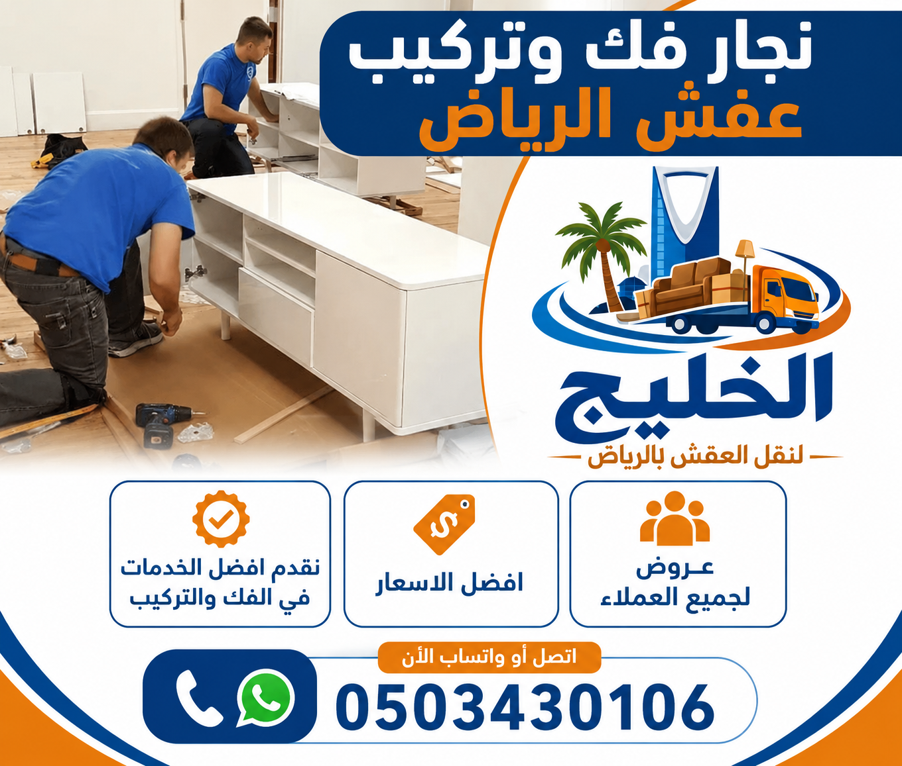

نجار فك وتركيب عفش الرياض | أفضل معلم فك وتركيب أثاث وغرف نوم بأسعار مناسبة

إذا كنت تبحث عن نجار فك وتركيب عفش الرياض محترف وذو خبرة، فإن شركة الخليج هي خيارك الأمثل. نحن نقدم فك وتركيب عفش الرياض على أيدي أمهر نجار أثاث الرياض ومعلم فك وتركيب عفش لديهم خبرة تزيد عن 12 عاماً في التعامل مع جميع أنواع الأثاث. شركة نقل عفش الرياض المتخصصة لدينا توفر خدمات متكاملة تشمل الفك والتركيب والنقل والتغليف.
يعد نجار تركيب أثاث بالرياض من أكثر الخدمات طلباً، خاصة مع كثرة التنقل وتجديد المنازل. في شركة الخليج، نضمن لك تركيب أثاث احترافي يعيد لك أثاثك كالجديد تماماً. أفضل نجار فك وتركيب عفش الرياض ينتظر اتصالك لخدمتك في جميع أحياء الرياض.
أفضل نجار فك وتركيب عفش الرياض بأسعار مناسبة وخدمة متميزة
يعتبر نجار فك وتركيب عفش الرياض من شركة الخليج من أفضل المختصين في مجال فك وتركيب الأثاث بجميع أنواعه. ما يميز أفضل نجار أثاث بالرياض لدينا هو الخبرة الطويلة والالتزام بالمواعيد والدقة في العمل. نحن نقدم تركيب أثاث احترافي يضمن لك إعادة تركيب جميع قطع الأثاث كما كانت في منزلك القديم دون أي أخطاء أو تلف. نقل عفش الرياض مع خدمات الفك والتركيب المتكاملة توفر لك الوقت والجهد والتكاليف.
فريق نجار فك وتركيب عفش الرياض لدينا يستخدم أحدث الأدوات والمعدات لضمان فك الأثاث بدون خدوش أو تلف. نقوم بتفكيك جميع أنواع الأثاث: غرف النوم، المطابخ، المجالس، المكاتب، والأجهزة المنزلية الثابتة. بعد الفك، نقوم بتغليف جميع القطع بمواد عازلة لحمايتها، ثم نعيد تركيبها في المنزل الجديد بدقة متناهية. أفضل نجار فك وتركيب عفش الرياض يضمن لك راحة البال التامة. شركة نقل عفش الرياض توفر أيضاً سيارات مجهزة لنقل الأثاث بعد فكه وتركيبه.
أسعار نجار فك وتركيب عفش الرياض لدينا تنافسية جداً، حيث تبدأ من 150 ريال للقطعة الواحدة، مع عروض خاصة للطلبات الكبيرة. اسعار نقل عفش الرياض مع خدمات الفك والتركيب تحصل على خصم يصل إلى 30% عند حجز الحزمة المتكاملة. افضل شركة نقل عفش الرياض تنتظر اتصالك. اتصل بنا الآن على 0503430106 للحصول على استشارة مجانية وعرض سعر فوري.
خدمات فك وتركيب الأثاث في الرياض | حلول شاملة لجميع أنواع الأثاث

نقدم في شركة الخليج مجموعة شاملة من خدمات فك وتركيب الأثاث في الرياض التي تشمل جميع أنواع الأثاث المنزلي والمكتبي. فك الأثاث يتم بعناية فائقة باستخدام الأدوات المناسبة لكل نوع من الأثاث، مع الحرص على عدم إتلاف أي قطعة. تركيب الأثاث يتم بنفس الدقة، مع التأكد من ثبات جميع القطع وتركيبها بشكل صحيح. فريق نجار أثاث لدينا مدرب على التعامل مع جميع أنواع الأخشاب والمواد، ويعرف كيفية فك وتركيب الأثاث بسرعة وكفاءة. خدمات فك وتركيب الأثاث بالرياض تشمل أيضاً تغليف الأثاث قبل النقل.
تشمل خدمات فك وتركيب الأثاث في الرياض لدينا: فك وتركيب غرف النوم بجميع أنواعها (سراير، خزائن، تسريحات)، فك وتركيب المجالس العربية والأوروبية، فك وتركيب المطابخ الجاهزة، فك وتركيب المكاتب وطاولات الاجتماعات، فك وتركيب الأجهزة الكهربائية المثبتة، فك وتركيب الستائر والنجف. كل فريق متخصص في نوع معين من الأثاث لضمان أعلى مستوى من الجودة. نجار أثاث الرياض لدينا يصل إلى منزلك خلال ساعة من الاتصال.
نستخدم أحدث أدوات فك الأثاث وتركيب الأثاث، بما في ذلك المفكات الكهربائية، والموازين الليزرية، وأجهزة الكشف عن الأسلاك في الجدران. هذا يضمن لنا تركيب الأثاث بشكل آمن ومستوٍ تماماً. كما نقدم خدمة الترقيم والتوثيق لجميع القطع المفككة، مع إعداد تقرير مفصل عن حالة الأثاث قبل وبعد الفك والتركيب. نجار فك وتركيب عفش الرياض يضمن لك عدم فقدان أي قطعة أو برغي. اتصل بنا الآن لتحصل على خدمة فك وتركيب الأثاث بأفضل الأسعار.
فك وتركيب غرف النوم بالرياض | نجار غرف نوم محترف
تعتبر غرف النوم من أكثر قطع الأثاث حساسية والتي تحتاج إلى خبرة خاصة عند تركيب غرف النوم أو فكها. نحن في شركة الخليج نقدم خدمة متخصصة لـ فك غرف النوم وتركيب غرف النوم بواسطة نجار غرف نوم محترف. غرف النوم تحتوي على العديد من القطع الكبيرة والثقيلة مثل السرائر والدواليب والتسريحات، والتي تحتاج إلى فك وتركيب دقيق لتجنب أي تلف أو خدش. خدمة فك وتركيب غرف النوم بالرياض لدينا هي الأكثر طلباً.
عند فك غرف النوم، نقوم بتفكيك السرير إلى أجزائه الأساسية (الإطار، القاعدة، اللوح الأمامي)، وتفكيك الدولاب إلى أجزائه مع ترقيم كل قطعة وكل باب، وتفكيك التسريحة مع الحفاظ على المرايا. كل البراغي والمسامير والقطع الصغيرة توضع في أكياس شفافة مكتوب عليها نوع القطعة التي تنتمي إليها. هذا يضمن لنا إعادة تركيب غرف النوم بنفس الشكل دون فقدان أي جزء. فريق نجار غرف نوم الرياض لدينا لديه خبرة في التعامل مع جميع أنواع غرف النوم، سواء كانت خشبية أو زجاجية أو حديثة أو كلاسيكية.
فك وتركيب غرف النوم بالرياض يتم باستخدام أدوات خاصة مثل مفكات كهربائية بقوة تحكم في العزم، وموازين ليزر لضمان استواء الدواليب، ومواد حماية للزوايا. نضمن لك إعادة تركيب غرفة نومك كما كانت تماماً أو حتى أفضل. الأسعار تبدأ من 200 ريال لغرفة النوم الصغيرة. اتصل بنا الآن على 0503430106 لطلب خدمة فك وتركيب غرف النوم بأسعار منافسة.
فك وتركيب المجالس والكنب | خدمات متخصصة للأثاث الكبير
نقدم في شركة الخليج خدمات متخصصة لـ فك المجالس وتركيب الكنب والمجالس العربية والأوروبية. فك الأثاث الكبير مثل المجالس والكنب يتطلب مهارة عالية وفريقاً مدرباً، حيث أن هذه القطع كبيرة الحجم وثقيلة الوزن. فريق نجار فك وتركيب عفش الرياض لدينا يستخدم تقنيات خاصة لفك المجالس دون إتلاف الأقمشة أو الأخشاب. نقوم بتفكيك المجالس إلى أجزائها الأساسية (الظهر، المقعد، الأذرع)، مع تغليف كل جزء على حدة بمواد عازلة.
عند تركيب الكنب والمجالس بعد النقل، نحرص على إعادة تجميعها بنفس الشكل الأصلي مع التأكد من تثبيت جميع الأجزاء بإحكام. نستخدم مواد تشحيم للمفصلات والأجزاء المتحركة لضمان عملها بسلاسة. كما نقدم خدمة تنظيف الكنب والمجالس قبل التغليف وبعد التركيب. فك المجالس عملية دقيقة تتطلب خبرة، ولدينا الفريق المناسب لها. نتعامل مع جميع أنواع المجالس: العربية (الكنب الكبير)، والأوروبية، والمودرن.
أسعار فك وتركيب المجالس والكنب تبدأ من 150 ريال للمجلس الواحد، وتختلف حسب عدد القطع وتعقيد التصميم. نقدم عروضاً خاصة عند طلب خدمة فك وتركيب لأكثر من 3 مجالس. اتصل بنا على 0503430106 لطلب خدمة فك وتركيب المجالس والكنب بأسعار تنافسية وجودة عالية.
نجار تركيب أثاث المنازل والفلل | خدمة منزلية متكاملة
نقدم خدمات تركيب أثاث المنازل وتركيب أثاث الفلل بواسطة نجار منازل بالرياض محترف. عملية تركيب الأثاث في المنازل الجديدة تتطلب دقة عالية، خاصة إذا كان الأثاث جديداً تم شراؤه من عدة أماكن. فريق نجار تركيب أثاث المنازل والفلل لدينا يقوم بتركيب جميع أنواع الأثاث بدءاً من غرف النوم والمطابخ وصولاً إلى غرف المعيشة والمكاتب المنزلية.
نجار تركيب أثاث المنازل بالرياض لدينا يصل إلى منزلك ويقوم بتركيب جميع قطع الأثاث المشتراة حديثاً أو المنقولة من منزل آخر. نستخدم موازين ليزر لضمان استواء الأثاث وتركيبه بشكل محاذي للجدران. كما نقوم بتثبيت الأثاث الثقيل على الجدران لمنع سقوطه (خاصة في حالة وجود أطفال). تركيب أثاث الفلل يتطلب فريقاً أكبر نظراً لحجم الأثاث، ونحن نخصص فريقاً كاملاً للفيلا الواحدة.
تشمل خدمات نجار منازل بالرياض أيضاً تركيب الأثاث الجاهز من ايكيا، وتركيب الأثاث المستعمل بعد شرائه، وتركيب الأثاث المصمم حسب الطلب. الأسعار تبدأ من 100 ريال للقطعة الواحدة، مع خصومات على الطلبات الكبيرة. اتصل بنا على 0503430106 لطلب نجار تركيب أثاث المنازل والفلل بأسعار مناسبة.
فك وتركيب الأثاث أثناء النقل | خدمة متكاملة مع النقل
نقدم في شركة الخليج خدمة نقل وفك وتركيب العفش كحزمة متكاملة توفر عليك الوقت والجهد. نقل الأثاث بالرياض مع فك العفش قبل النقل وتركيبه بعد الوصول هي أفضل طريقة لضمان سلامة الأثاث. خدمة نقل وفك وتركيب العفش بالرياض لدينا تشمل: المعاينة المجانية، الفك الاحترافي، التغليف، النقل باستخدام سيارات مجهزة، والتركيب في المنزل الجديد.
فك وتركيب الأثاث أثناء النقل هو الخيار الأمثل للعملاء الذين ينتقلون إلى منزل جديد أو مكتب جديد. فريقنا يبدأ بفك جميع قطع الأثاث وتغليفها، ثم نقلها إلى الموقع الجديد، وأخيراً إعادة تركيبها في الأماكن التي تحددها. هذا يضمن لك استلام أثاثك جاهزاً للاستخدام فور وصوله. نقل العفش بالرياض مع الفك والتركيب يوفر لك عناء البحث عن نجار منفصل والناقل منفصل.
أسعار نقل وفك وتركيب العفش تبدأ من 400 ريال للشقة الصغيرة، وتختلف حسب حجم الأثاث والمسافة. نقدم خصماً 20% على الحزم المتكاملة عند الحجز عبر موقعنا. شركة نقل عفش الرياض الخليج تنتظر اتصالك. اتصل على 0503430106 لطلب خدمة الفك والتركيب أثناء النقل.
تغليف الأثاث بعد الفك وقبل النقل | حماية فائقة للأثاث
نقدم خدمة تغليف العفش الاحترافية بعد عملية الفك وقبل النقل. حماية الأثاث تبدأ بالتغليف الصحيح الذي يمنع الخدوش والكسور وتراكم الغبار. خدمة تغليف الأثاث في الرياض لدينا تشمل استخدام البلاستيك الفقاعي ثلاثي الطبقات، والكرتون المقوى بجدارين، والأغطية القماشية المقاومة للماء، والزوايا البلاستيكية الحامية، والرغوة العازلة للصدمات.
تغليف غرف النوم يتم بتغليف كل قطعة على حدة مع حماية الزوايا والأطراف. الأرائك والكنب تُغلف بأغطية قماشية خاصة، والمرايا واللوحات الزجاجية تُغلف بطبقات متعددة من البلاستيك الفقاعي والكرتون، والأجهزة الإلكترونية تُغلف بمواد مضادة للصدمات والكهرباء الساكنة. فريقنا المتخصص يقوم بتغليف كل قطعة حسب نوعها ومادتها.
تغليف الأثاث بعد الفك هو استثمار يضمن لك استلام أثاثك بحالة ممتازة بعد النقل أو التخزين. نستخدم مواد تغليف عالية الجودة تضمن حماية الأثاث من الرطوبة والغبار والصدمات. أسعار التغليف تبدأ من 50 ريال للقطعة الواحدة. اتصل بنا على 0503430106 لطلب خدمة تغليف الأثاث الاحترافية.
أفضل مواد تغليف الأثاث المستخدمة في الرياض
نستخدم في شركة الخليج أفضل مواد تغليف العفش المتوفرة في السوق لضمان أقصى حماية لعفشك. كراتين نقل الأثاث التي نستخدمها هي من النوع المقوى بجدارين، وتتحمل أوزاناً كبيرة وتحمي المحتويات من الصدمات. حماية الأثاث تشمل البلاستيك الفقاعي بثلاث طبقات، والزوايا البلاستيكية والكرتونية لحماية زوايا الأثاث، والأغطية القماشية المقاومة للماء والغبار، والرغوة العازلة للصدمات والاهتزازات. أفضل مواد تغليف الأثاث لدينا يتم تجديدها باستمرار.
مواد تغليف العفش لدينا يتم اختيارها بعناية حسب نوع كل قطعة من الأثاث. للقطع الزجاجية والمرايا، نستخدم طبقات متعددة من البلاستيك الفقاعي والكرتون السميك. للأجهزة الإلكترونية، نستخدم مواد مضادة للكهرباء الساكنة بالإضافة إلى الرغوة العازلة. للأثاث الخشبي الفاخر، نستخدم أغطية قماشية ناعمة من الداخل مع طبقة خارجية مقاومة للماء. جميع مواد تغليف العفش التي نستخدمها صديقة للبيئة وقابلة لإعادة التدوير.
نحن نؤمن بأن جودة كراتين نقل الأثاث ومواد التغليف هي العامل الأهم في ضمان وصول الأثاث بحالة ممتازة. لذلك، لا نتردد أبداً في استخدام أفضل المواد المتوفرة، حتى لو كان ذلك يعني تكلفة أعلى قليلاً بالنسبة لنا، لأن رضا العميل وسلامة أثاثه هما أولويتنا الأولى. اتصل بنا لمعرفة المزيد عن مواد التغليف التي نستخدمها.
جدول مقارنة أسعار فك وتركيب العفش في الرياض
| الخدمة | السعر (ريال) | الوقت التقريبي | الخدمات المشمولة |
|---|---|---|---|
| فك وتركيب غرفة نوم صغيرة | 150 - 250 | 1-2 ساعة | فك + تغليف أساسي + تركيب |
| فك وتركيب غرفة نوم كبيرة | 250 - 400 | 2-3 ساعات | فك + تغليف كامل + تركيب |
| فك وتركيب مجلس (5-7 قطع) | 200 - 350 | 2 ساعة | فك + تغليف + تركيب |
| فك وتركيب مطبخ كامل | 300 - 600 | 3-5 ساعات | فك + تغليف + نقل + تركيب |
| تركيب أثاث ايكيا (قطعة) | 80 - 150 | 30-60 دقيقة | تركيب حسب التعليمات |
| فك وتركيب مكيف (سبليت) | 100 - 200 | 1 ساعة | فك + تغليف + تركيب + شحن غاز |
| حزمة نقل + فك وتركيب شقة | 600 - 1200 | 4-6 ساعات | خدمة شاملة مع خصم 20% |
* الأسعار تقريبية وتختلف حسب حجم الأثاث والمسافة. اتصل بنا للحصول على عرض سعر دقيق.
جدول مقارنة مواد التغليف المستخدمة
| نوع المادة | شركة الخليج | الشركات الأخرى | الميزة |
|---|---|---|---|
| البلاستيك الفقاعي | 3 طبقات - سمك 10 مم | طبقة واحدة - سمك 3 مم | حماية فائقة ضد الصدمات |
| كرتون التغليف | مقوى بجدارين | جدار واحد عادي | يتحمل أوزان أكبر |
| أغطية الأرائك | قماش مقاوم للماء | بلاستيك رقيق فقط | حماية من الغبار والرطوبة |
| صناديق التحف | خشب + فوم مخصص | كرتون عادي | حماية قصوى للقطع الثمينة |
الأحياء والمناطق التي نقدم فيها خدمات فك وتركيب العفش بالرياض
نقدم خدمات نجار فك وتركيب عفش الرياض في جميع أحياء الرياض، بما في ذلك:
نغطي أيضاً شمال الرياض (الملقا، الغدير، النخيل)، شرق الرياض (النهضة، المنصورية، القادسية)، جنوب الرياض (البطحاء، الشفا، الدار البيضاء)، وغرب الرياض (العريجا، لبن، المهدية). مهما كان موقعك في الرياض، فإن نجار فك وتركيب عفش الرياض لدينا يصل إليك خلال ساعة من الاتصال. اتصل بنا على 0503430106 لخدمة فورية.
الأسئلة الشائعة عن نجار فك وتركيب عفش الرياض
تختلف الأسعار حسب حجم ونوع الأثاث، ولكنها تبدأ من 150 ريال للقطعة الواحدة، مع خصومات على الطلبات الكبيرة. اتصل بنا للحصول على عرض سعر دقيق.
نعم، نقوم بفك وتركيب غرف النوم بالكامل بما فيها السرائر والدواليب والتسريحات، مع ترقيم جميع القطع لضمان إعادة التركيب بشكل صحيح.
نعم، لدينا فنيون متخصصون في تركيب أثاث ايكيا حسب التعليمات الأصلية للشركة، مع ضمان التركيب السليم.
نعم، لدينا نجارين متخصصين في فك وتركيب المجالس العربية والأوروبية والكنب الكبير، مع خبرة في التعامل مع الأقمشة الحساسة.
نعم، نقوم بتغليف جميع قطع الأثاث بعد الفك باستخدام أفضل مواد التغليف لحمايتها من الخدوش والغبار أثناء النقل أو التخزين.
نعم، لدينا خدمة نقل العفش المتكاملة التي تشمل الفك والتغليف والنقل والتركيب في الموقع الجديد.
نعم، نوفر خدمة تخزين الأثاث في مستودعات آمنة ومكيفة بعد عملية الفك والتغليف، مع إمكانية استرجاعه في أي وقت.
شركة الخليج هي الأفضل في الرياض بفضل خبرتها الطويلة وفريقها المدرب وأسعارها المناسبة وخدماتها المتكاملة. اتصل بنا لتجربة مميزة.
تستغرق عملية فك وتركيب غرفة نوم كاملة من 1 إلى 3 ساعات، وفيلا كاملة قد تستغرق يوماً كاملاً حسب حجم الأثاث.
نعم، لدينا فنيون متخصصون في فك وتركيب جميع أنواع المكيفات (شباك، سبليت، مركزية) مع ضمان التشغيل الكامل بعد التركيب.
نعم، نقدم ضماناً على جميع خدمات الفك والتركيب لمدة شهر كامل ضد أي عيوب فنية أو أخطاء في التركيب.
بالتأكيد، نقدم معاينة مجانية وتقييماً للعفش مع عرض سعر مفصل وشفاف قبل بدء أي عمل.
نعم، فريقنا مدرب على التعامل مع الأثاث المستورد والفاخر بكافة أنواعه، باستخدام تقنيات خاصة للحفاظ على قيمته.
نعم، نقدم خدمات فك وتركيب العفش في جميع مدن المملكة، مع شاحنات مخصصة للرحلات الطويلة.
نعم، نقدم خصماً 20% على أول تجربة، وعروضاً خاصة للطلبات الكبيرة والعملاء الدائمين. اتصل بنا لمعرفة أحدث العروض.
نجار فك وتركيب عفش الرياض - اتصل بنا الآن
فريق الخليج ينتظر مكالمتك لتقديم أفضل خدمات فك وتركيب الأثاث بأسعار لا تقبل المنافسة في الرياض
شركة نقل عفش الرياض - افضل شركة نقل عفش الرياض - اسعار نقل عفش الرياض